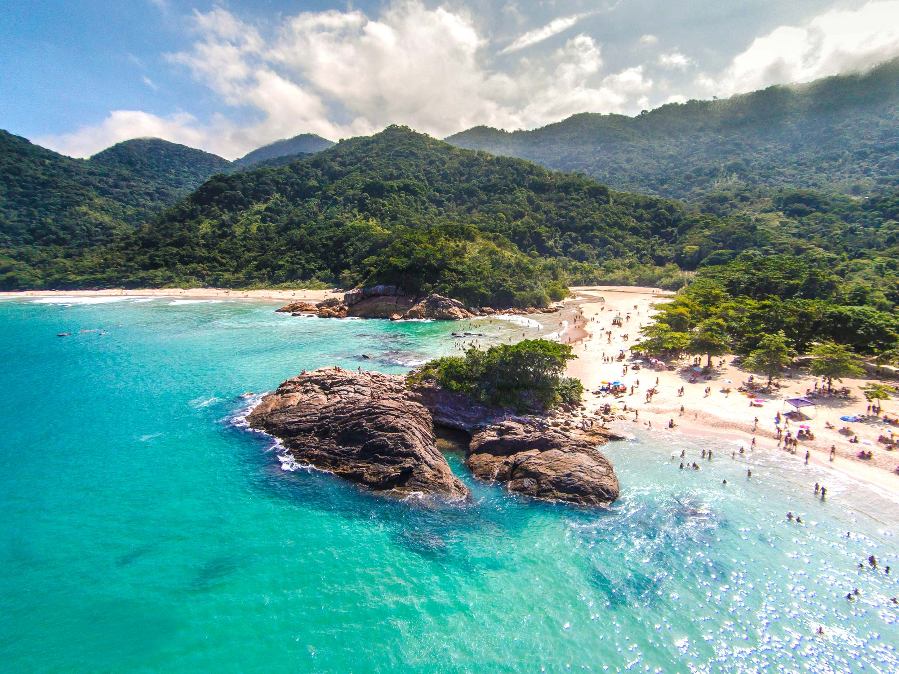
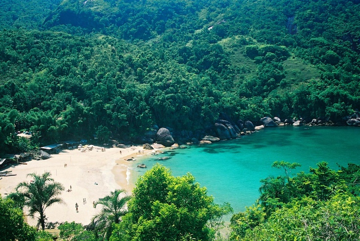
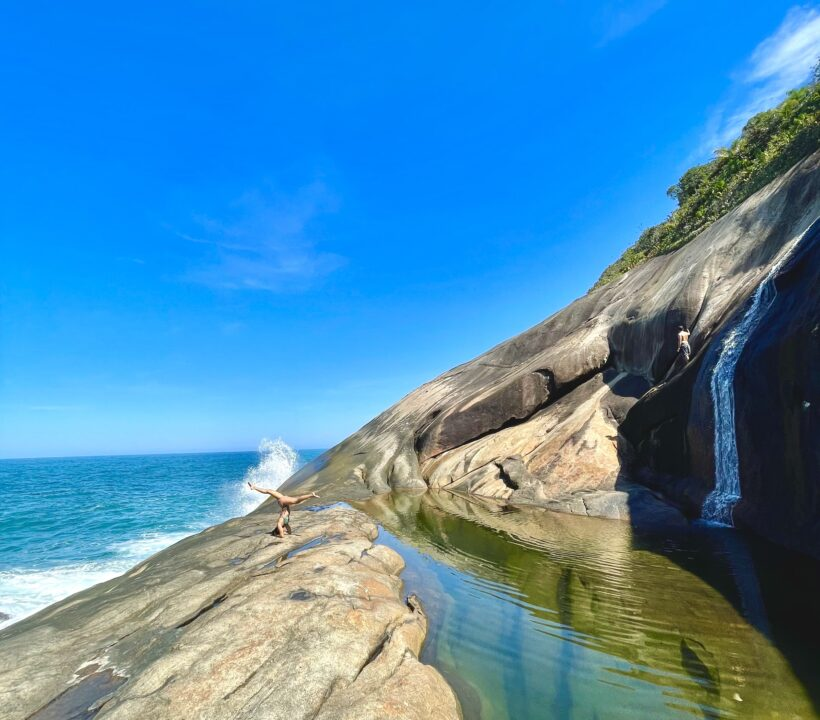

🥾 Expedição Exclusiva: Trindade & Trilha do Saco Bravo
🔥 VAGAS ULTRA LIMITADAS: APENAS 6 LUGARES!
Um final de semana de pura natureza e aventura, unindo a vibe da Vila de Trindade à travessia para a piscina natural do Saco Bravo em um grupo VIP e reduzido.
📅 SEXTA-FEIRA: Embarque Rumo ao Litoral
22:00 — Saída de São Paulo: Embarque no ponto de encontro rumo à Vila de Trindade.
Madrugada — Chegada & Acomodação: Chegada em Trindade e descanso para o final de semana.

🌊 SÁBADO: Dia Livre em Trindade
Dia reservado para curtir as praias no seu próprio ritmo e descansar as pernas para a grande aventura de domingo.
- Manhã (Praias & Piscina Natural): Tempo livre para caminhar pela Praia do Meio e explorar a Piscina Natural do Cachadaço.
- Tarde (Praia dos Ranchos & Cepilho): Momento de relaxar à beira-mar, curtir a vila caiçara e o visual das praias locais.
- Noite (Pernoite Cedo): Aconselhável descansar cedo para o despertar na madrugada de domingo.

🧗 DOMINGO: Aventura na Ponta Negra & Trilha do Saco Bravo
⚠️ Nível de Dificuldade: Difícil / Técnico (subidas íngremes, raízes e pedras).
⏱️ Duração da Trilha: Aprox. 2 horas para ir e 2 horas para voltar.
06:45 — Traslado de Barco Exclusivo para Ponta Negra
Embarque rápido do nosso grupo no barco/lancha com destino à comunidade isolada de Ponta Negra.
07:30 — Início da Trilha do Saco Bravo
Início da caminhada por dentro da Mata Atlântica preservada rumo à famosa cachoeira que deságua no mar.
09:30 — Chegada ao Saco Bravo
Tempo para contemplar a paisagem, tirar fotos incríveis e tomar banho na piscina natural.
11:00 — Trilha de Retorno
Início da caminhada de volta em direção à Praia de Ponta Negra.
13:00 — Chegada a Ponta Negra & Almoço (Opcional)
Tempo livre na praia. Opcionalmente, há restaurantes locais com vista deslumbrante para o mar.
14:30 — Fim de Tarde em Ponta Negra
Momento para relaxar na areia e aproveitar o visual de uma das praias mais preservadas da região.
16:30 — Retorno de Barco para Trindade
Embarque de volta para a Vila de Trindade.
17:30 — Preparação para o Regresso
Tempo para organizar bagagens e troca de roupas antes do embarque.
18:30 — Saída Rumo a São Paulo
Início da viagem de regresso para a capital.

📋 Informações Gerais & Reservas
- Diferencial: Roteiro exclusivo para um grupo VIP de no máximo 6 pessoas.
- O que está incluso: Acampamento com barracas fornecidas, Transporte (ida e volta saindo de SP) e travessia de barco (condominio laranjeiras x Ponta Negra x condominio laranjeiras).
- Data: [10/10 , 14/11 e 12/12]
- Ponto de Encontro: [ung]
🚨 Aviso Importante: Por ser um grupo extremamente reduzido (apenas 6 vagas), as reservas são confirmadas estritamente por ordem de contato.
Garantir minha vaga no grupo exclusivo?
Entre em contato pelo WhatsApp 11939160198